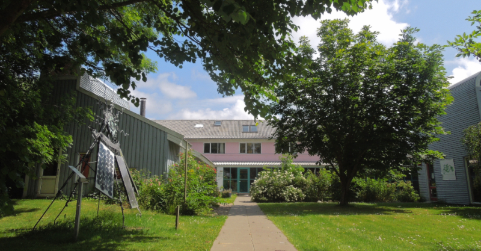
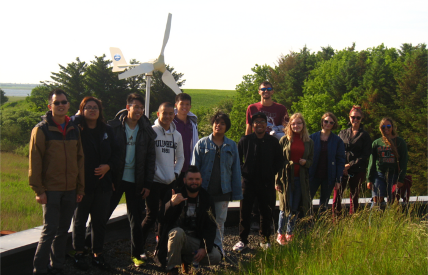
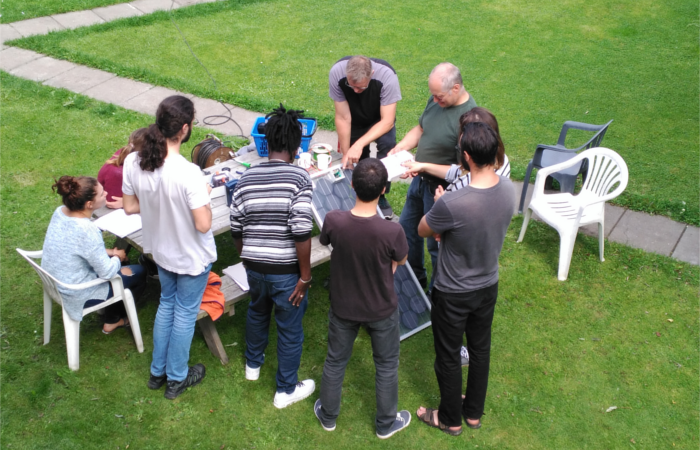

Our ultimate long term goal is a complete replacement of fossil fuels and atomic power with renewable energies and energy savings while promoting the sustainability, resilience and development of local communities around the world. For this purpose, we have collaborated with local civil society organisations, research and education centres, companies, professionals and governmental authorities from all over the globe for decades.
We carry out research and development projects in collaboration with Danish and international universities, research centres, SMEs, local authorities and other civil society organisations. New energy solutions, improved products, tools for local authorities or energy policy recommendations are some of the outcomes of these projects. Practical expertise and years of tight collaboration with different actors that are making the energy transition happen are our added value as partners of any research project. Furthermore, in all our projects our objective is to make sure that the newly developed knowledge or solutions do not land in a drawer, but reach the right actors or markets.
Since its foundation, Folkecenter has been a "must-stop" for all people working -or simply interested in- renewable energies. It's location in the middle of nature makes it very enjoyable to visit the 10 hectares which constitute the center. By visiting the Village for Green Research, where Folkecenter is located, visitors will have the chance to see different examples of renewable energy technologies applied in practise, proving that a transition to 100% renewables is not only possible, but it can also be profitable. More than 6000 people visit Folkecenter every year: this includes schools, regular people, professionals from the industry, academics, politicians and delegations from different countries, all with one goal in common: to learn more about renewable energy and to see it applied in the real world. Visitors can either take a tour of the facilities by themselves starting from the Café Solaire, where different examples of energy saving lamps are shown, or book a guided tour. Self-based excursions can occur any day of the week at any hour of the day (provided that there is light), while guided tours are normally taking place between Monday and Thursday (08.00 - 16.00) or on Friday (08.00 - 13.00) and have a duration between 1,5 and 3 hours. Guided tours outside working hours, as well as longer excursions can be arranged on demand. Field trips for country delegations and energy planners can also be organized: Folkecenter is located in what it is known as "the Green Circle", an area where a large majority of commercial renewable energy installations can be visited. From different types of district heating to the largest wind turbines in the world, passing through hydrogen installations and geothermal technology...all what it is to be known can be reached quite quickly. Field trips are tailored-made, so it is requested to contact us in advance to define the details. Both field trips and guided tours can be organized by sending a mail to info@folkecenter.dk
Folkecenter truly believes that training is the key of any future development: for this reason, we organize a different range of courses and workshops which can benefit both schools, private people and professionals. We are currently able to provide customized education for solar and wind energy, as well as more practically oriented courses, like the workshops "Build your own Sun Generator" and "Build your own transformer". Additional courses and workshops are on the way, but you are always welcome to contact us and enquire a specific topic. We have a very large network, and we would be happy to organize something that can benefit you, your school or your company.
